後 8 張地圖新增 48 種，既有素材修復 8 種；每種附靜態圖及攻擊影格。所有近戰與魔法朝左。
以正式部署人物的透明可見輪廓校準：一般怪高度 112%、菁英及首領 120%；寬翼與四足怪保持比例，以寬度上限校準。人物素材、尺寸與落點保留。手機 390×844、桌面 1280×900；驗收頁使用實際繪圖程式及模擬戰鬥資料，不操作玩家帳號。
清除低透明度雜點及跨格碎片，待機不輪播攻擊殘影；影格統一右側錨點，搭配蓄能、地面預警、向左投射及命中特效。48 種新圖的 480 個格邊均沒有不透明輪廓觸邊。這是 星穹旅誌 2D 網頁美術提升，並非 3A 品質認證。
| 地圖 | 原問題及修正 | 結果 |
|---|---|---|
| 1 阿耳忒彌斯月桂林 | 原怪物約 250px、人物約 156px，過大；月桂樹精及巨樹精重製並清理跨格碎片。 | 6/6 完整；手機／桌面尺寸及邊界通過 |
| 2 雅典娜百柱神殿 | 原 34% 高度規則使怪物約 117–143px，小於人物；厘米右移可能出界，已取消。 | 6/6 完整；手機／桌面尺寸及邊界通過 |
| 3 阿卡迪亞聖林 | 原怪物偏小及右移；潘神、仙女、守衛、菁英與首領修復跨格武器／輪廓，改向左。 | 6/6 完整；手機／桌面尺寸及邊界通過 |
| 4 波賽頓愛琴海崖 | 原透明留白導致約 183–237px 不一致，右移可能裁切；依可見輪廓校準並處理寬蟹；塞壬重新分離 10 格，清除相鄰翅膀殘影。 | 6/6 完整；手機／桌面尺寸及邊界通過 |
| 5 克里特迷宮門庭 | 原缺少 6 種，已新增各 10 格，含近戰、蓄能、向左施法、受擊及待機。 | 6/6 完整；手機／桌面尺寸及邊界通過 |
| 6 赫淮斯托斯熔爐 | 原缺少 6 種，已新增各 10 格，含近戰、蓄能、向左施法、受擊及待機。 | 6/6 完整；手機／桌面尺寸及邊界通過 |
| 7 冥河斯堤克斯渡口 | 原缺少 6 種，已新增各 10 格，含近戰、蓄能、向左施法、受擊及待機。 | 6/6 完整；手機／桌面尺寸及邊界通過 |
| 8 德爾菲阿波羅神諭谷 | 原缺少 6 種，已新增各 10 格，含近戰、蓄能、向左施法、受擊及待機。 | 6/6 完整；手機／桌面尺寸及邊界通過 |
| 9 泰坦諸神山隘 | 原缺少 6 種，已新增各 10 格，含近戰、蓄能、向左施法、受擊及待機。 | 6/6 完整；手機／桌面尺寸及邊界通過 |
| 10 奧林帕斯雲門 | 原缺少 6 種，已新增各 10 格，含近戰、蓄能、向左施法、受擊及待機。 | 6/6 完整；手機／桌面尺寸及邊界通過 |
| 11 至福樂土 | 原缺少 6 種，已新增各 10 格，含近戰、蓄能、向左施法、受擊及待機。 | 6/6 完整；手機／桌面尺寸及邊界通過 |
| 12 奧林帕斯星穹聖殿 | 原缺少 6 種，已新增各 10 格，含近戰、蓄能、向左施法、受擊及待機。 | 6/6 完整；手機／桌面尺寸及邊界通過 |
| 地圖 | 怪物 | 類別 | 處理 | 實際素材 |
|---|---|---|---|---|
| 1 阿耳忒彌斯月桂林 | 月光野兔 | 一般 | 保留已檢查影格 | 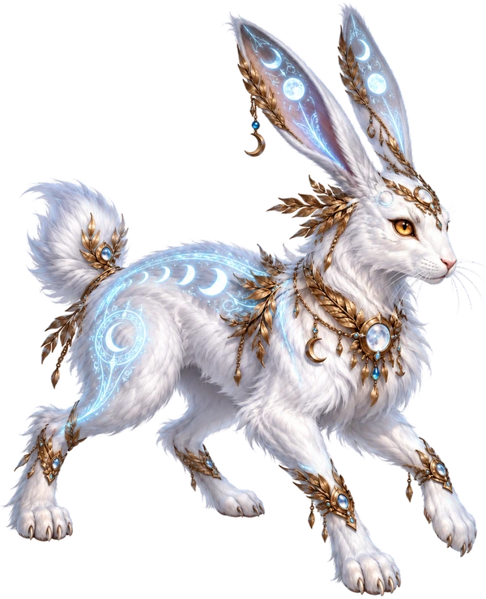 |
| 1 阿耳忒彌斯月桂林 | 月桂樹精 | 一般 | 修復 10 格 | 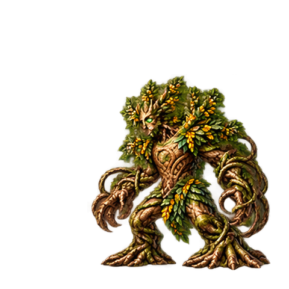 |
| 1 阿耳忒彌斯月桂林 | 林地花仙 | 一般 | 保留已檢查影格 | 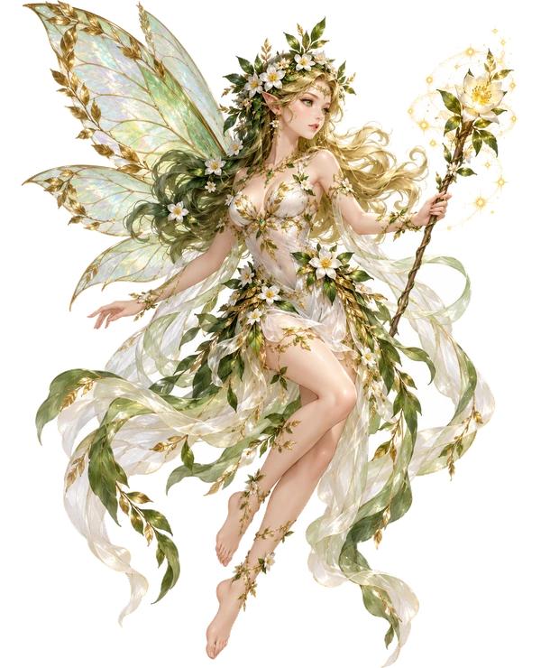 |
| 1 阿耳忒彌斯月桂林 | 林精斥候 | 一般 | 保留已檢查影格 | 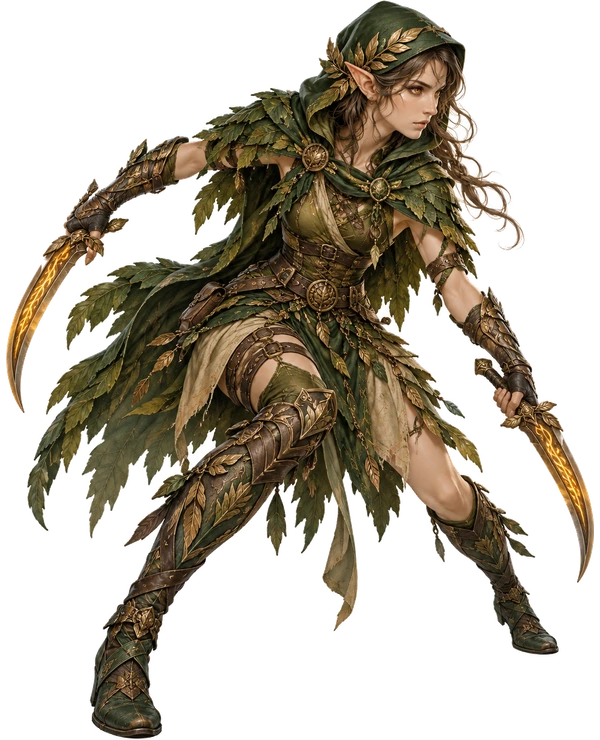 |
| 1 阿耳忒彌斯月桂林 | 阿耳忒彌斯巡林長 | 菁英 | 保留已檢查影格 | 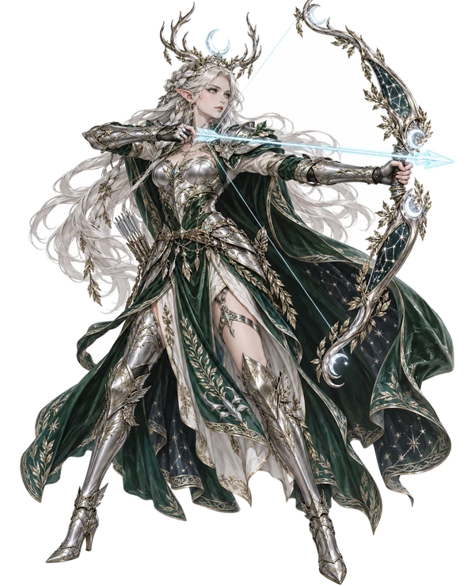 |
| 1 阿耳忒彌斯月桂林 | 月桂巨樹精 | 首領 | 修復 10 格 | 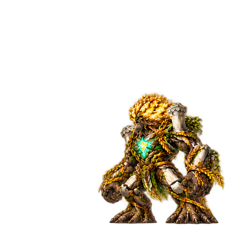 |
| 2 雅典娜百柱神殿 | 百柱石像 | 一般 | 保留已檢查影格 | 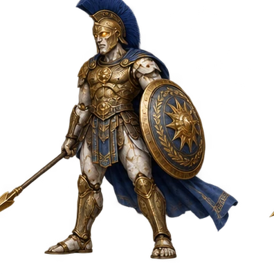 |
| 2 雅典娜百柱神殿 | 智慧夜梟 | 一般 | 保留已檢查影格 | 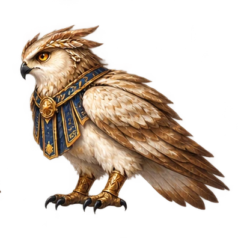 |
| 2 雅典娜百柱神殿 | 青銅衛兵 | 一般 | 保留已檢查影格 | 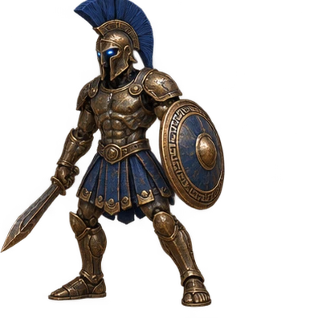 |
| 2 雅典娜百柱神殿 | 神殿侍從鬼魂 | 一般 | 保留已檢查影格 | |
| 2 雅典娜百柱神殿 | 神殿禁衛百夫長 | 菁英 | 保留已檢查影格 | 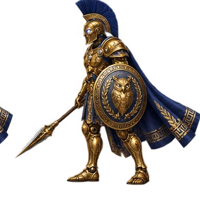 |
| 2 雅典娜百柱神殿 | 百柱守護巨像 | 首領 | 保留已檢查影格 | 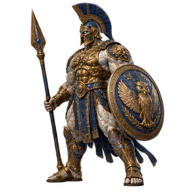 |
| 3 阿卡迪亞聖林 | 潘神幼獸 | 一般 | 修復 10 格 | 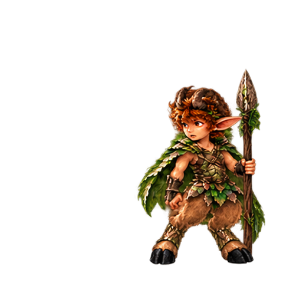 |
| 3 阿卡迪亞聖林 | 山林仙女 | 一般 | 修復 10 格 | 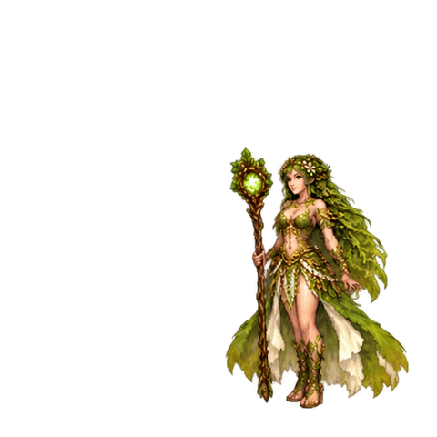 |
| 3 阿卡迪亞聖林 | 聖角羚羊 | 一般 | 保留已檢查影格 | 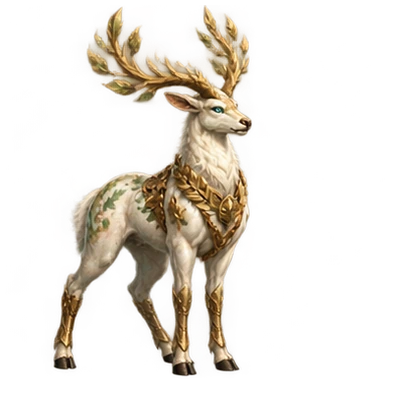 |
| 3 阿卡迪亞聖林 | 古木守衛 | 一般 | 修復 10 格 | 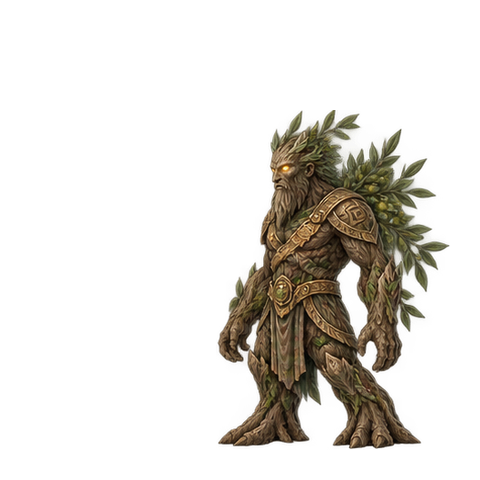 |
| 3 阿卡迪亞聖林 | 狂暴潘神衛士 | 菁英 | 修復 10 格 | 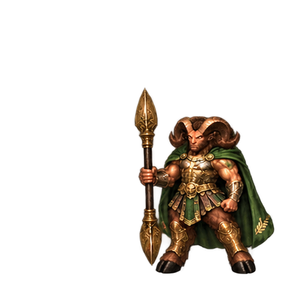 |
| 3 阿卡迪亞聖林 | 哥布林酋長 | 首領 | 修復 10 格 | 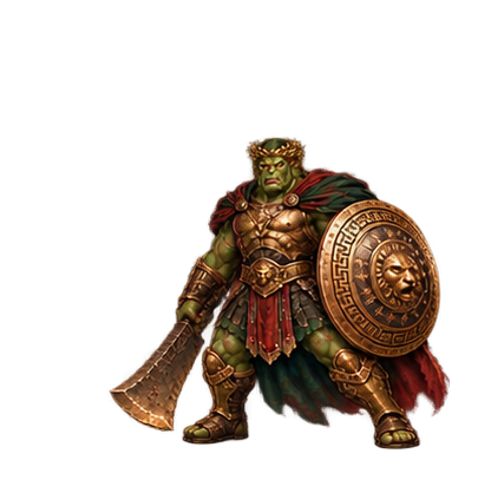 |
| 4 波賽頓愛琴海崖 | 海崖塞壬 | 一般 | 修復 10 格（清除跨格翅膀殘影） | 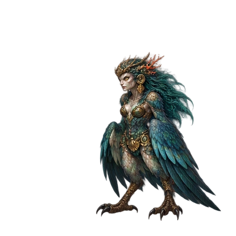 |
| 4 波賽頓愛琴海崖 | 潮汐甲蟲 | 一般 | 保留已檢查影格 | 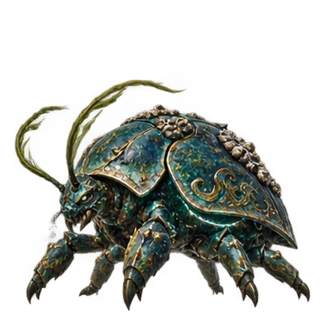 |
| 4 波賽頓愛琴海崖 | 波濤飛魚 | 一般 | 保留已檢查影格 | 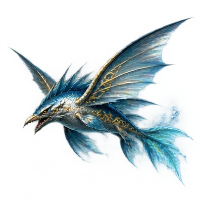 |
| 4 波賽頓愛琴海崖 | 海潮巨蟹 | 一般 | 保留已檢查影格 | 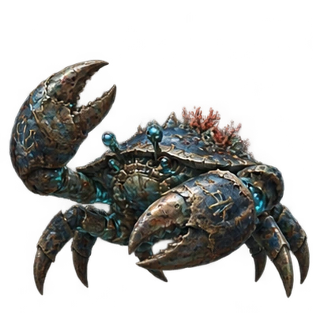 |
| 4 波賽頓愛琴海崖 | 深海狂暴巨蟹 | 菁英 | 保留已檢查影格 | 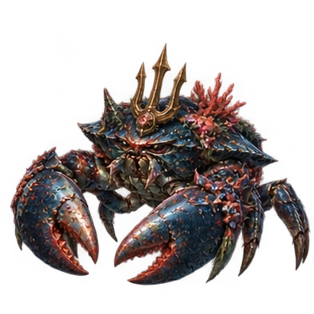 |
| 4 波賽頓愛琴海崖 | 海崖利維坦 | 首領 | 保留已檢查影格 | 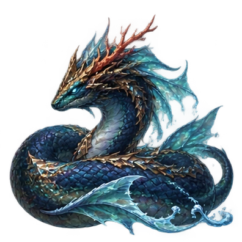 |
| 5 克里特迷宮門庭 | 迷宮巡邏兵 | 一般 | 新增 10 格 | 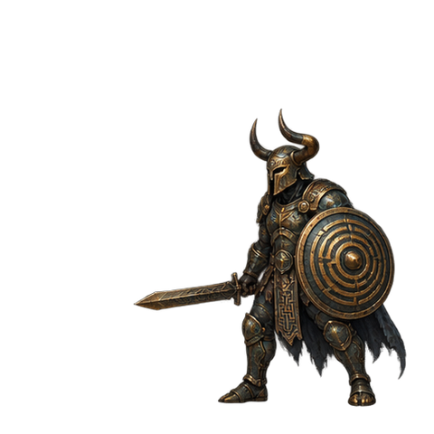 |
| 5 克里特迷宮門庭 | 青銅公牛 | 一般 | 新增 10 格 | 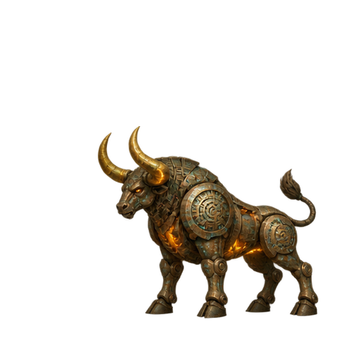 |
| 5 克里特迷宮門庭 | 蛇髮女妖幻影 | 一般 | 新增 10 格 | 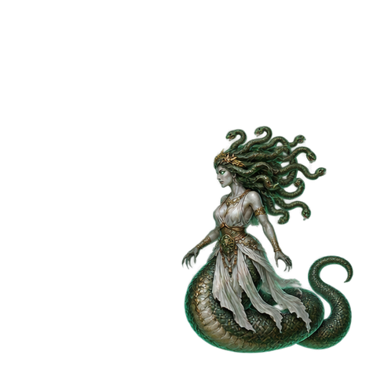 |
| 5 克里特迷宮門庭 | 石化蝙蝠 | 一般 | 新增 10 格 | 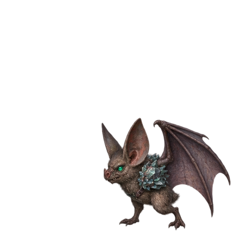 |
| 5 克里特迷宮門庭 | 迷宮巡查將軍 | 菁英 | 新增 10 格 | 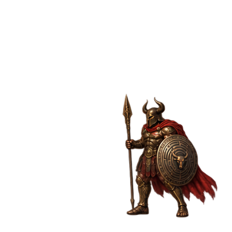 |
| 5 克里特迷宮門庭 | 米諾斯魔牛 | 首領 | 新增 10 格 | 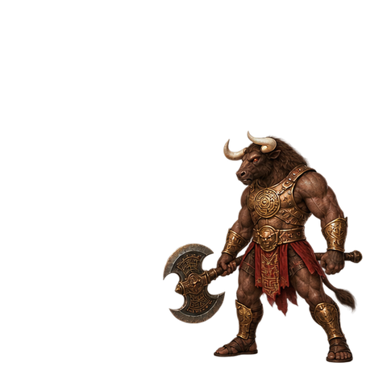 |
| 6 赫淮斯托斯熔爐 | 熔岩火蜥蜴 | 一般 | 新增 10 格 | 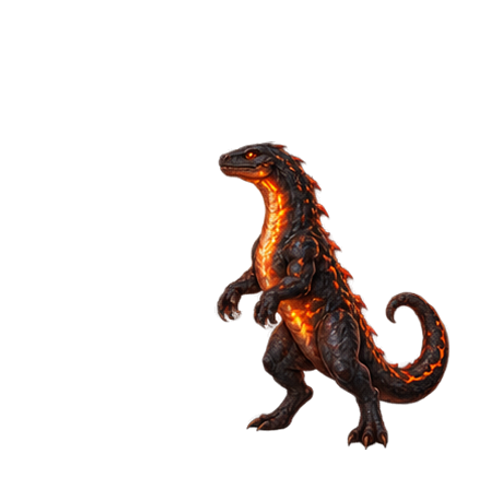 |
| 6 赫淮斯托斯熔爐 | 鍛造巨傀儡 | 一般 | 新增 10 格 | 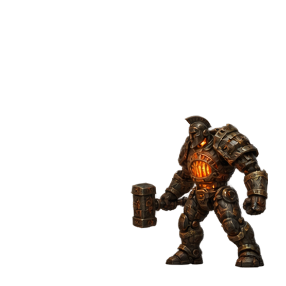 |
| 6 赫淮斯托斯熔爐 | 火晶石魔 | 一般 | 新增 10 格 | 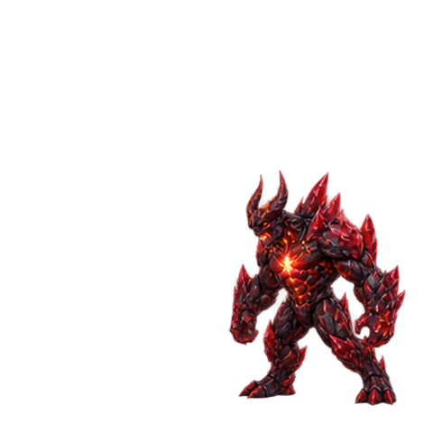 |
| 6 赫淮斯托斯熔爐 | 鍛火魔蝠 | 一般 | 新增 10 格 | 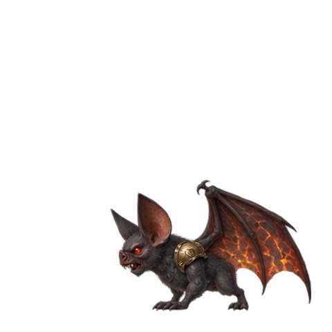 |
| 6 赫淮斯托斯熔爐 | 熔火鍛造長 | 菁英 | 新增 10 格 | 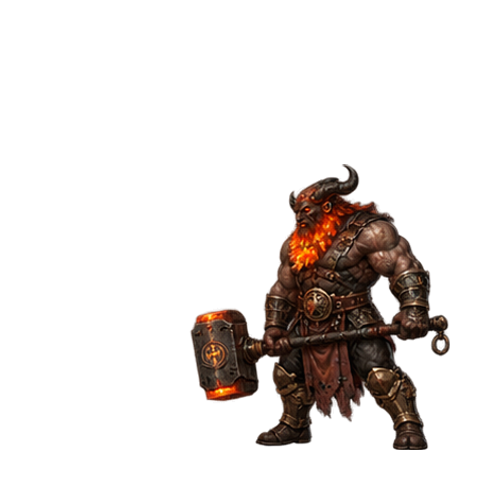 |
| 6 赫淮斯托斯熔爐 | 腐朽樹王 | 首領 | 新增 10 格 | 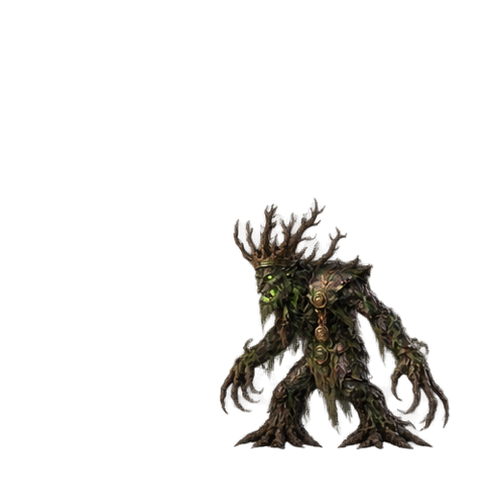 |
| 7 冥河斯堤克斯渡口 | 迷途遊魂 | 一般 | 新增 10 格 | 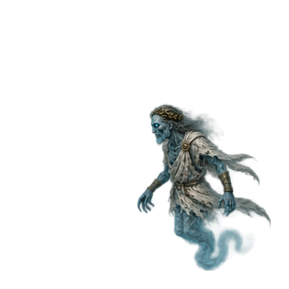 |
| 7 冥河斯堤克斯渡口 | 斯堤克斯骨兵 | 一般 | 新增 10 格 | 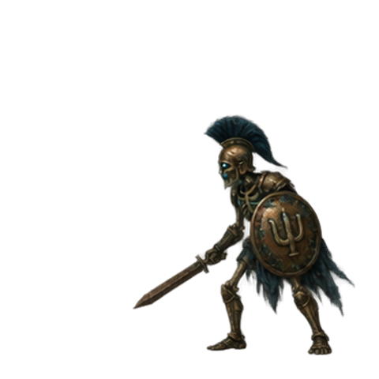 |
| 7 冥河斯堤克斯渡口 | 冥府渡鴉 | 一般 | 新增 10 格 | 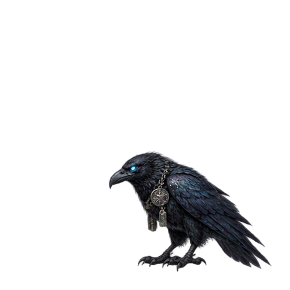 |
| 7 冥河斯堤克斯渡口 | 三頭犬幼崽 | 一般 | 新增 10 格 | 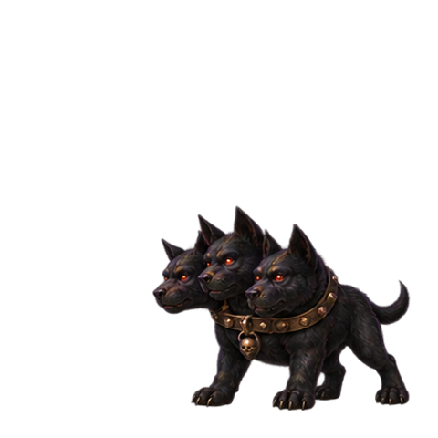 |
| 7 冥河斯堤克斯渡口 | 冥河擺渡鬼將 | 菁英 | 新增 10 格 | 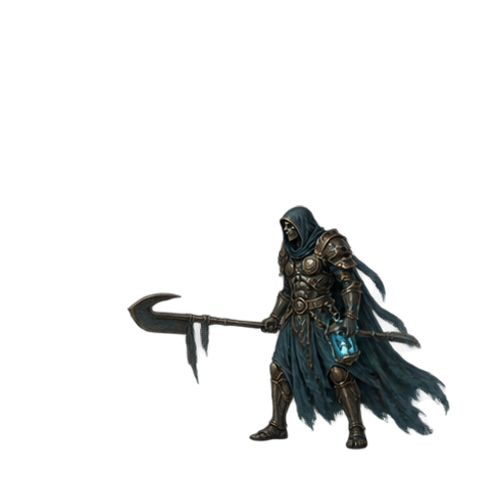 |
| 7 冥河斯堤克斯渡口 | 冥河擺渡者 | 首領 | 新增 10 格 | 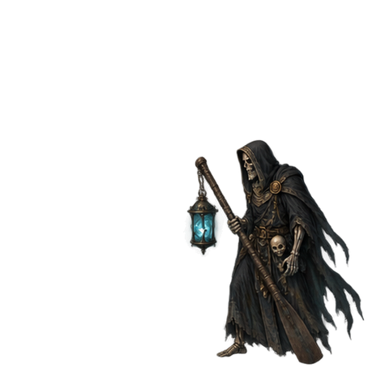 |
| 8 德爾菲阿波羅神諭谷 | 神諭幻蟒 | 一般 | 新增 10 格 | 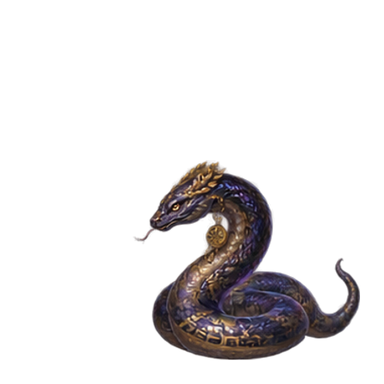 |
| 8 德爾菲阿波羅神諭谷 | 阿波羅日鷹 | 一般 | 新增 10 格 | 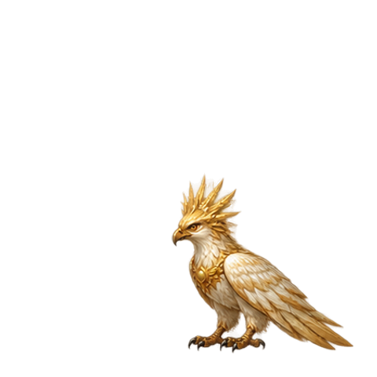 |
| 8 德爾菲阿波羅神諭谷 | 預言祭司幽靈 | 一般 | 新增 10 格 | 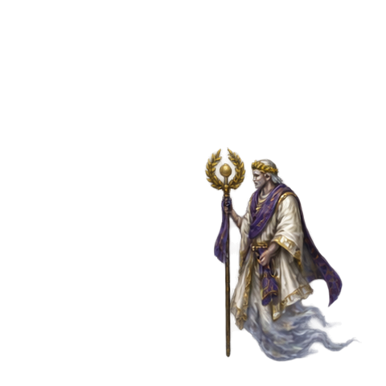 |
| 8 德爾菲阿波羅神諭谷 | 日光石妖 | 一般 | 新增 10 格 | 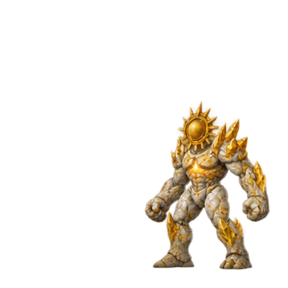 |
| 8 德爾菲阿波羅神諭谷 | 神諭大祭司 | 菁英 | 新增 10 格 | 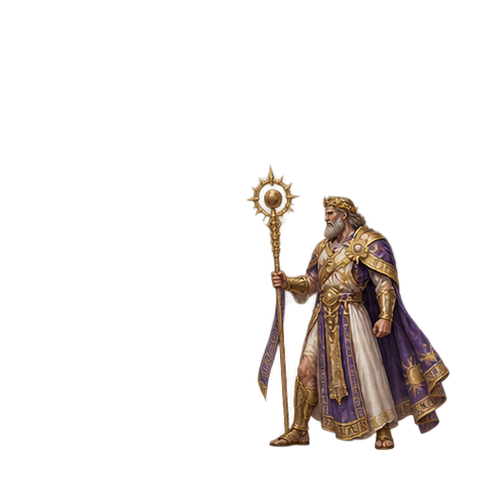 |
| 8 德爾菲阿波羅神諭谷 | 皮同巨蟒 | 首領 | 新增 10 格 | 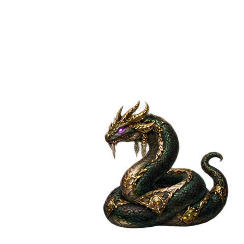 |
| 9 泰坦諸神山隘 | 泰坦巨足獸 | 一般 | 新增 10 格 | 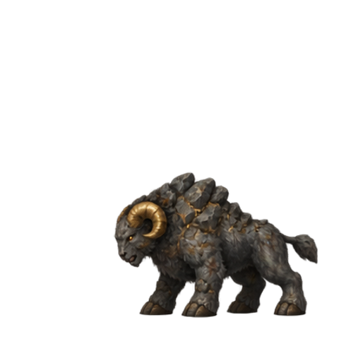 |
| 9 泰坦諸神山隘 | 裂地石魔 | 一般 | 新增 10 格 | 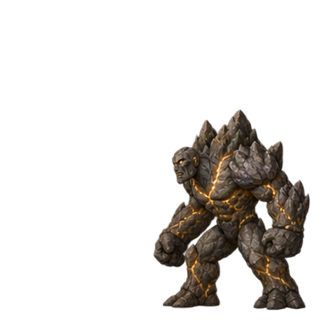 |
| 9 泰坦諸神山隘 | 山隘狂風鳥 | 一般 | 新增 10 格 | 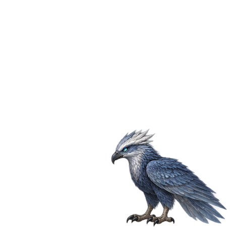 |
| 9 泰坦諸神山隘 | 雷霆蜥蜴 | 一般 | 新增 10 格 | |
| 9 泰坦諸神山隘 | 泰坦先鋒戰將 | 菁英 | 新增 10 格 | |
| 9 泰坦諸神山隘 | 熔岩巨像 | 首領 | 新增 10 格 | |
| 10 奧林帕斯雲門 | 雲海天馬 | 一般 | 新增 10 格 | |
| 10 奧林帕斯雲門 | 天界巡翼鳥 | 一般 | 新增 10 格 | |
| 10 奧林帕斯雲門 | 雲嵐仙女 | 一般 | 新增 10 格 | |
| 10 奧林帕斯雲門 | 聖光石像 | 一般 | 新增 10 格 | |
| 10 奧林帕斯雲門 | 雲門神廷禁軍長 | 菁英 | 新增 10 格 | |
| 10 奧林帕斯雲門 | 雲門守門巨神 | 首領 | 新增 10 格 | |
| 11 至福樂土 | 英雄英靈 | 一般 | 新增 10 格 | |
| 11 至福樂土 | 長生鳥 | 一般 | 新增 10 格 | |
| 11 至福樂土 | 純金石獅 | 一般 | 新增 10 格 | |
| 11 至福樂土 | 至福精靈 | 一般 | 新增 10 格 | |
| 11 至福樂土 | 阿基里斯英靈 | 菁英 | 新增 10 格 | |
| 11 至福樂土 | 至福守護王者 | 首領 | 新增 10 格 | |
| 12 奧林帕斯星穹聖殿 | 星穹神侍 | 一般 | 新增 10 格 | |
| 12 奧林帕斯星穹聖殿 | 星座巨獸 | 一般 | 新增 10 格 | |
| 12 奧林帕斯星穹聖殿 | 日冕精魄 | 一般 | 新增 10 格 | |
| 12 奧林帕斯星穹聖殿 | 虛空吞噬者 | 一般 | 新增 10 格 | |
| 12 奧林帕斯星穹聖殿 | 星穹神官長 | 菁英 | 新增 10 格 | |
| 12 奧林帕斯星穹聖殿 | 霜龍女皇 | 首領 | 新增 10 格 |
驗收限制：未登入 Telegram 玩家帳號進行獎勵／傷害結算。後端回歸測試 141 項中 132 項通過、9 項為裝備／轉職／舊素材規格失敗；本次部署沿用當前線上後端原碼，不部署本機後端修改。